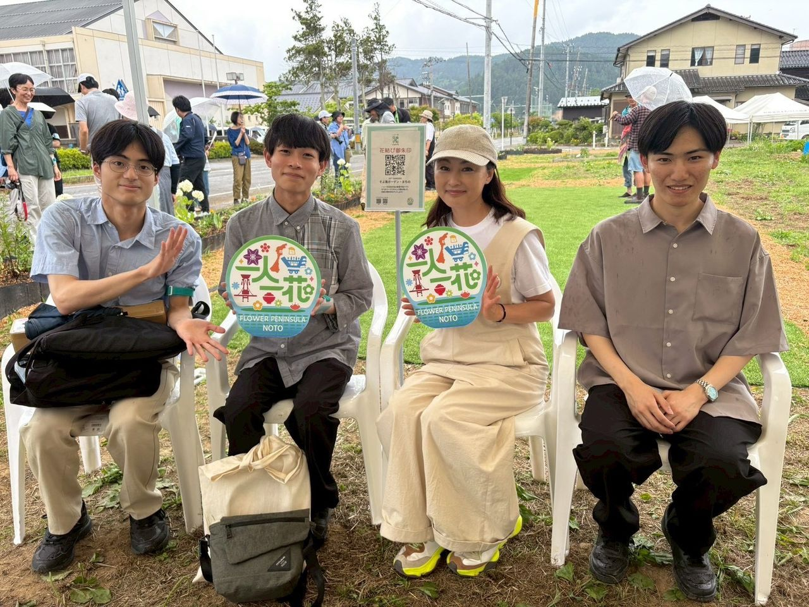
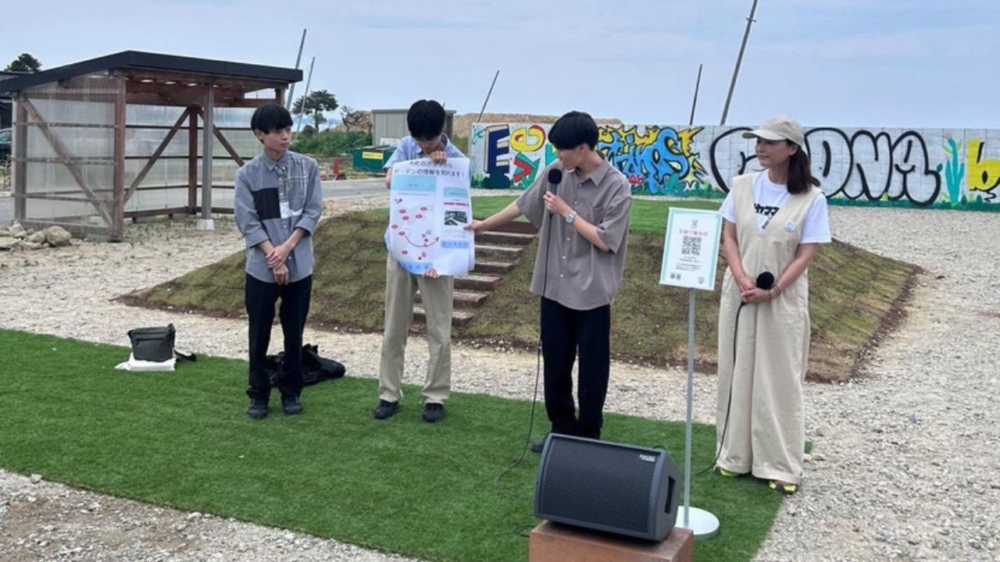
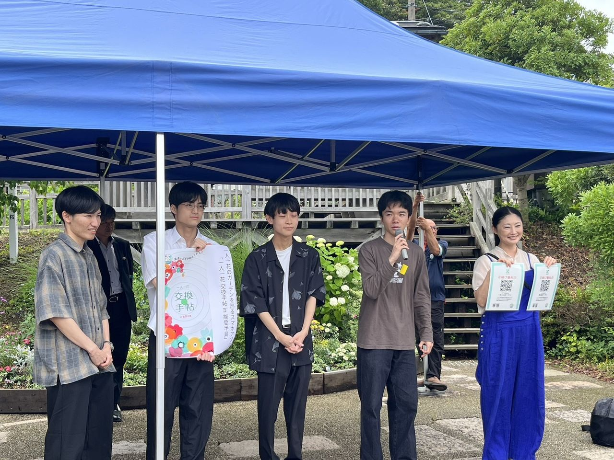
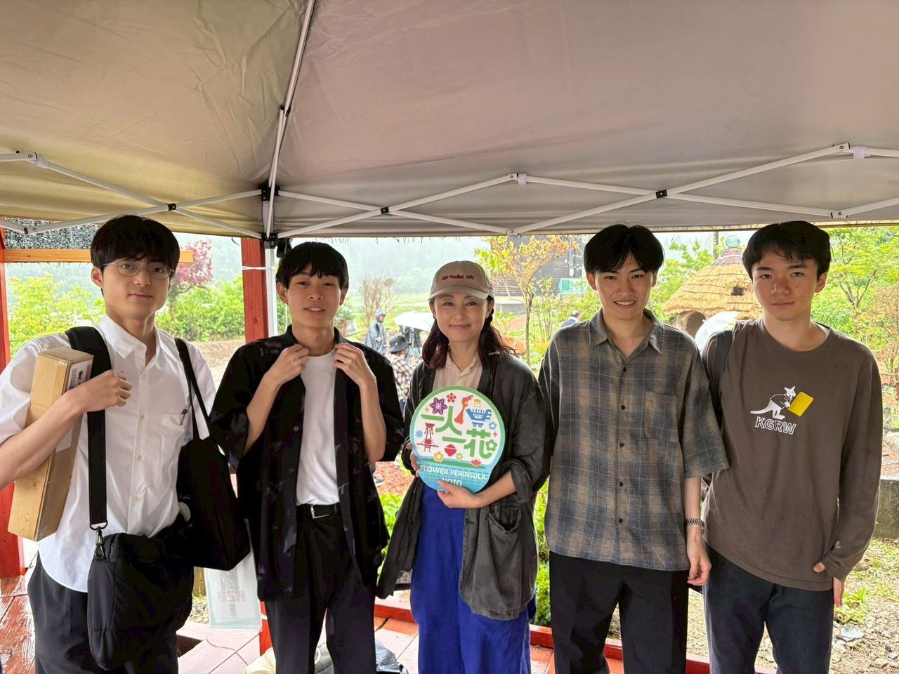

2026年6月20日・21日に開催された「一人一花 in 能登半島」プロジェクトのコミュニティガーデンづくりイベントに参加しました。
珠洲市宝立、輪島市町野・門前、穴水町下唐川の計4会場で、地域の方々をはじめとした多くの参加者の皆さまとともに、解体後の空き地へのお花植え活動に参加しました。
「一人一花 in 能登半島」プロジェクトは、復興の過程で生まれた空き地を、地域の人々と全国の支援者が協力して「憩いの場」へと再生していく取り組みです。
2026年6月20日・21日に開催された「一人一花 in 能登半島」プロジェクトのコミュニティガーデンづくりイベントに参加しました。
珠洲市宝立、輪島市町野・門前、穴水町下唐川の計4会場で、地域の方々をはじめとした多くの参加者の皆さまとともに、解体後の空き地へのお花植え活動に参加しました。
「一人一花 in 能登半島」プロジェクトは、復興の過程で生まれた空き地を、地域の人々と全国の支援者が協力して「憩いの場」へと再生していく取り組みです。

各会場で、こもれびが開発したアプリ「一人一花 交換手帖 in 能登半島」のお披露目と初回登録のサポートを行いました。2日間で100名以上の方にダウンロードしていただき、多くの皆さまにアプリをご利用いただくきっかけとなりました。
イベントの詳細や活動の様子は以下でもご覧いただけます。
珠洲・輪島・穴水の計4会場でガーデンを作るイベントを開催します – 一人一花 in 能登半島
珠洲市，輪島市，穴水町の空き地に常盤さんと花を植えました！ – 一人一花 in 能登半島

お花植えイベントを通して、一人一花さんの活動、そして人々と地域のつながりの偉大さを実感しました。また、アプリをご利用いただく姿を目の当たりにし、今後の活動への大きな励みとなりました。

